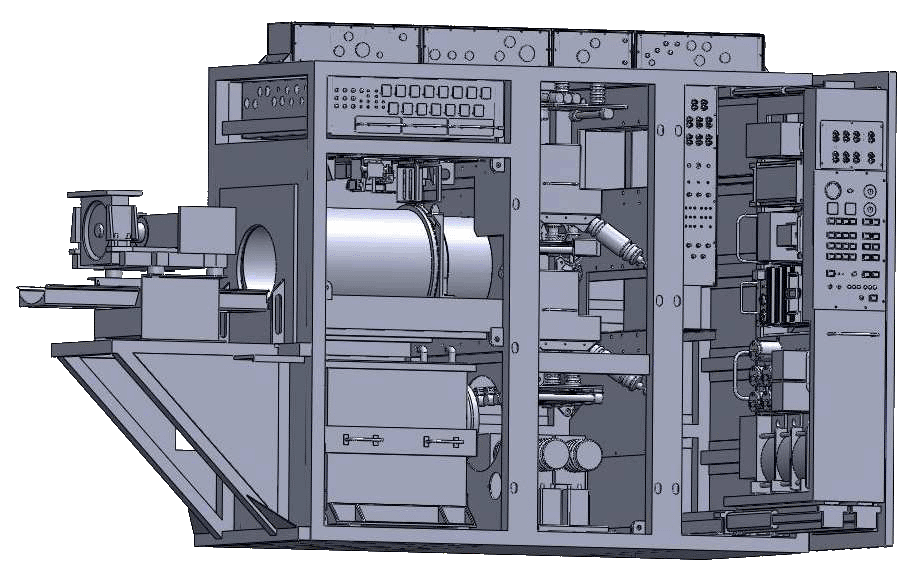
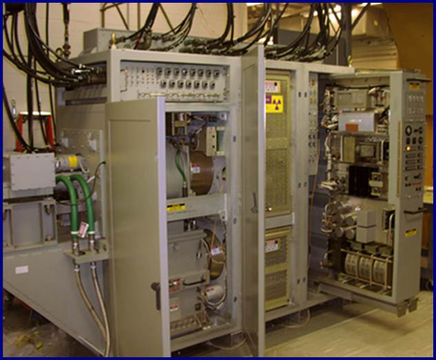

SPS-49 Transmitter Upgrade
Definition
The AN/SPS-49 Radar is the Navy's principle long-range two-dimensional air target search radar. This radar is capable
of detecting small fighter aircraft at ranges in excess to 225 nautical miles and provides significant detection
performance against both high altitude and sea-skimming missiles.
The AN/SPS-49 Radar is used on Cruisers, Frigates, Amphibious ships, and all ative Aircraft Carriers.
Problem
Many deployed above water sensors such as the AN/SPS-49 Radar System, are
already 10+ years past projected operational life. This compounded by the delay, development,
and deployment of new advanced radar systems presents a challenge to sustaining operational effectiveness.
The Common Digital Sensor Architecture (CDSA) was initiated to provide the sustainment path for deployed
above water sensors such as the AN/SPS-49 Radar.
RSI Solution
AN/SPS-49 Radar's Unit #2 Transmitter upgrade through technology refresh and integration.
- Increase Sustained Operation
- Improve Maintainability and Availability
- Improve Reliability
- Improve MTBF
Upgrades include:
- New circuit card designs
- Power distribution control
- Microwave RF Control
- Primary logic control
- Antenna control
- Power supplies
- Modified panels
- Additional cabling
- Self test circuitry for fault isolation to card
- Collect data to identify 100-percent of all transmitter critical functional faults.
- Collect data to fault isolate to a single LRU 95-percent of the time.

AN/SPS-49 Radar Specifications
The AN/SPS-49B Unit 2 Transmitter's primary function is to amplify a low level RF signal to
a minimum level of 280kWp and send it to the microwave group for propagation.
- Number Built: 200+
- Frequency: L Band (850-942MHz)
- Range: 250nmi (288 miles / 460km)
- Altitude: Up to 150,000 ft. (45.7km)
- Precision: 0.03nmi (0.5 deg azimuth)
- 6 RPM for Long Range Mode
- 12 RPM for Short Range Mode (Default Mode in A(V)1)
- MTBF: >600 hrs
